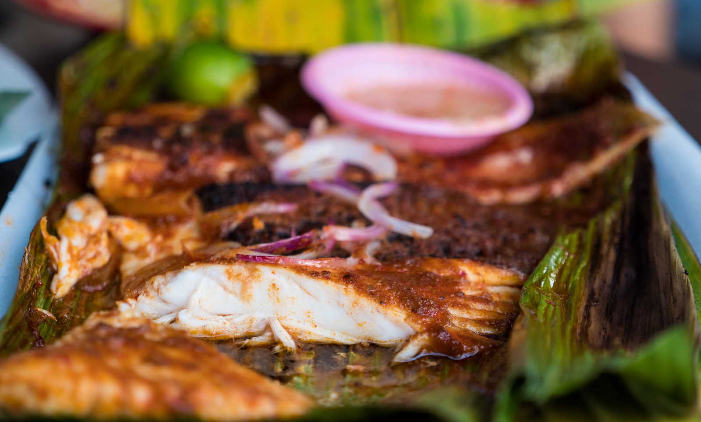

Introduction
In this Muscat travel guide, I’m going to share with you practical information about where to stay, things to do, and we’ll especially focus on the delicious food to eat when you visit Muscat, Oman.
Muscat is an incredible, spacious, clean, and friendly city, with so many things to offer you when you visit.
Ok, let’s get right into this Muscat travel guide for food lovers!
Before visiting Oman, I really had no idea what Omani food was – it’s a cuisine that can be rather difficult to find (unless you know an Omani friend) outside of Oman. But that makes Omani food truly exciting to taste and discover.
Shuwa – Considered one of the national Omani foods, shuwa is a dish of lamb or goat slow cooked in an underground oven with spices. After a long process of slow cooking, the meat is typically served on a big tray over a bed of rice and eaten communally. Omani shuwa is especially common to eat during family festivities and celebrations. There are many similar dishes to shuwa throughout the Middle East like Bedouin zarb.

My Favorite Singaporean Dishes:
If you love food, you’ll definitely want to check out the full Singapore food guide, but I here I just wanted to share some of my personal favorite Singaporean dishes.
- Fish head curry – This is the dish I would like to eat as soon as I arrive in Singapore, and that’s exactly what I did when I arrived. There are a number of different types of Singapore fish head curry, but I really love the Indian version – a giant snapper head swimming in an abundantly flavorful spice filled curry. You typically get a big bowl of fish head curry, and then eat it with rice and a variety of other curries off of a banana leaf plate.
- BBQ sambal stingray – Another one of my ultimate food favorite foods in Singapore is stingray, which is claimed to be a unique Singapore dish. The fillets of stingray are typically seasoned with a nice thick layer of sambal chili sauce (which often includes chilies, garlic, tamarind, and other ingredients), and then it’s grilled in a banana leaf package. The banana leaves ensure the stingray is both steamed and grilled at the same time, so it remains juicy, yet still with a light grilled banana leaf aroma. Don’t miss sambal stingray in Singapore.